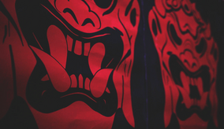

|  | ||||||||
|
A Dark Army a Kínai Népköztársaságból származó, hírhedt „hacker-for-refer” kollektívaként ismert, a titokzatos Whiterose vezetésével. Az Iránhoz, Oroszországhoz és Észak-Koreához fűződő állítólagos kapcsolatok miatt a Dark Army könyörtelen hatékonyságáról híres.
2015. szeptember 29-én a Dark Army és a fsociety tagjaiból álló lázadók megtámadták az E Corp főhadiszállását, megrongálva az épület legtöbb emeletét, és több ember meghalt. A támadás egybeesik Kongónak az ENSZ által Kínához történő csatolásával, de úgy tűnik, Phillip Price-t nem zavarja ez a zavargás. Néhány órával a zavargás után a 71 E Corp helyreállítási épületei országszerte felrobbannak vagy kigyulladnak a Dark Army akciói miatt. Noha az E Corp korábbi ideiglenes műszaki igazgatóját, Tyrell Wellicket elfogja az FBI, nincs semmi jogsértés, Shama Biswa és Sunil Markesh pedig a támadások elkövetői. A támadásban több mint 3000 ember vesztette életét, ezért a kormány hadiállapotot vezetett be, lehetővé téve a kijárási tilalom bevezetését. Az elkövetők megölik magukat, mielőtt az FBI elkapná őket, és Price láthatóan megrendült a robbantásoktól, és szembesül Zhang miniszterrel a támadásokkal kapcsolatban.